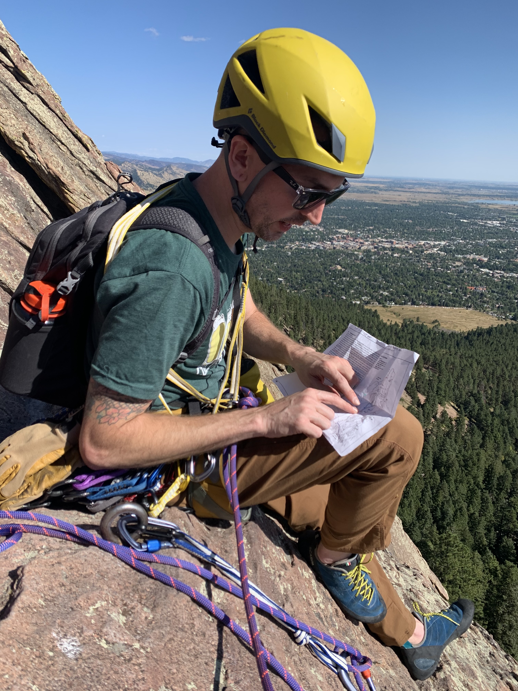

- About
- Work
- Blog
- Resume
Welcome! My name is Jason, and I currently work as a UX designer at CareStream Dental, focusing on their dental practice management software, Sensei Cloud. So far I have sat on two different teams and led the design of more than a dozen features and improvements, where I drastically increased the speed of billing and managing a family and their connections. I take the lead in building and maintaining our component library and design system in Figma. Additionally, piloted a continuous discovery program and played a pivotal role in expanding the UX team from 1 to 5 members.
Prior to joining CareStream, I served as a UX/UI designer at Tech for Campaigns, where I collaborated with a cross-functional team to design Matt Koleszar's re-election website. Our efforts proved fruitful, as Matt emerged victorious in the election!
My passion lies in uncovering customer needs and delivering tailored UX solutions that generate tangible value for businesses. I firmly believe in the significance of data-driven decisions and the iterative refinement of designs, as embracing feedback almost always leads to continuous improvements.
Since 2019, I have been steadily gaining experience and immersing myself in various tech disciplines. My journey began with learning HTML, CSS, and JavaScript, eventually leading me to gain experience in every aspect of the design process. In 2021, I completed Georgia Tech's UX/UI Bootcamp, and earned a certificate in Product Management from General Assembly. I also took the training to become a Certified Scrum Product Owner (CSPO) and renewed that Certification at the beginning of 2023.
My skill set boasts both the soft skills necessary for seamless stakeholder collaboration and the technical understanding to explore feasibility with developers. My keen eye for detail further enhances my efficiency and effectiveness as a designer. I possess the capability to spearhead UX research, facilitate usability testing, and swiftly articulate designs through quick sketches if I need to. I take pride in using clear communication to drive decisions and foster alignment within the teams that I work with.
In the past, I ran Spotlight Sound Studio, a recording studio offering digital audio production services. Notably, my studio held the distinction of being the number one recording studio in Alpharetta, GA, where I honed my expertise in project management while delivering high-quality products, skillfully balancing scope, schedule, and cost.
My journey into the recording industry was fueled by my passion as a musician and multi-instrumentalist. From singing to playing guitar, drums, bass, and the keyboard, music has been an integral part of my life since childhood, leading me to perform in numerous bands and travel extensively across the US, Canada, and Japan. This profound connection with music culminated in a degree in Recording Arts and the establishment of my recording business.
Throughout my career, I have consistently navigated the realm of technology, adeptly managing files, people, and projects, which fueled my curiosity for digital product management and coding. I engaged in extensive reading on these subjects, further fostering my curiosity. Over the past four years, I have continuously enriched my knowledge through classes on Front-End Development, Product Management, and UX/UI Design, and more.

In my leisure time, I find joy in exploring new places and indulging in hobbies like building and flying RC helicopters, propagating plants, and embracing mountaineering and rock climbing as my primary passion. I get immense satisfaction from working in tandem with a partner to overcome challenges, adhering to meticulous safety systems and equipment, and ultimately reaching the summit when climbing mountains.
Thank you for visiting my design portfolio, a testament to my enduring dedication to design excellence, continuous growth, and the relentless pursuit of new frontiers.